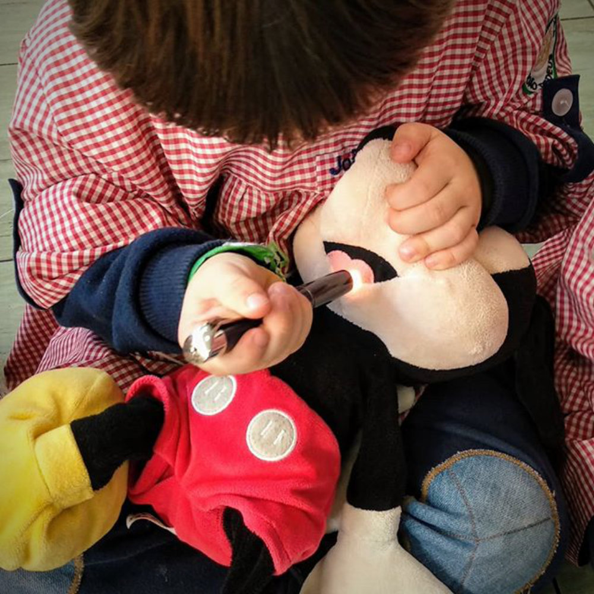
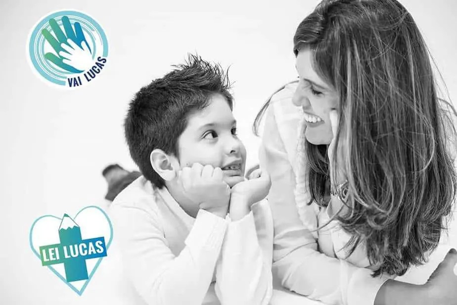
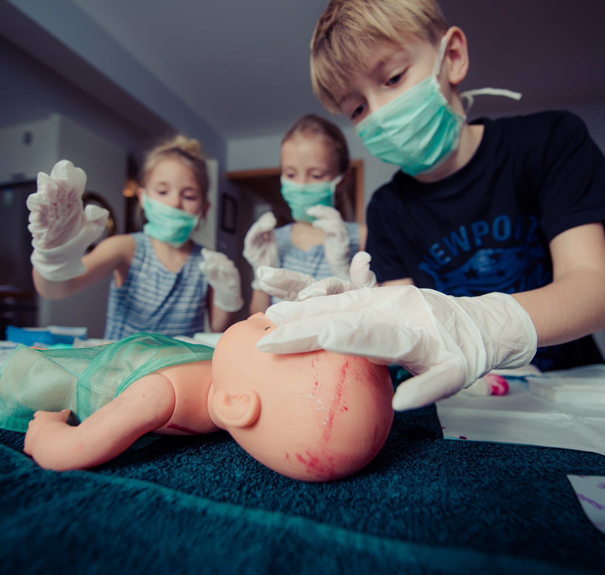

Ensinando futuros heróis
Acreditamos que a formação em saúde é um direito e dever de todos. Queremos fazê-la chegar a toda a comunidade.
A magia que nos afeta, faz com que tudo o que façamos seja para proveito daqueles que esperamos que um dia possam ser futuros heróis para eles e para os outros.
Nossa missão é: "Inspirar crianças a salvar vidas".
O que diz a Lei Lucas??

Lei Lucas (13.722/18) foi sancionada dia 04/10/2018. Ela obriga as escolas, públicas e privadas, de educação infantil e básica, a se prepararem para atendimentos de primeiros socorros.
As instituições de ensino devem ministrar cursos que capacitem professores e funcionários em noções básicas de primeiros socorros. Tal obrigação se estende aos estabelecimentos de recreação infantil.
Segundo a deputada Pollyana Gama, o curso deverá ser ofertado a cada dois anos. E vale ressaltar que haverá penalidades para quem não cumprir a lei. A punição começa pela notificação do descumprimento da lei. Após isso, pode haver multa e até mesmo a cassação do alvará ou responsabilização patrimonial.
O objetivo é garantir que todos saibam agir nos primeiros socorros até que a assistência médica especializada chegue ao local.
Lei Lucas: Conheça a história por detrás da lei
Lucas Begalli tinha apenas 10 anos quando perdeu a vida em uma excursão da escola que frequentava, em Campinas. Motivo: asfixia mecânica que ocorreu em questão de minutos. Ou seja, ele se engasgou com um pedaço de salsicha do cachorro quente que serviram no lanche. Mas não recebeu os primeiros socorros de forma rápida e adequada.
Lucas chegou a transferido em uma UTI móvel para o hospital, mas acabou falecendo. Ele sofreu sete paradas cardíacas em 50 minutos de tentativas de ressuscitação.
É possível que, se houvesse tentativas de reanimá-lo antes da chegada da UTI móvel, talvez ele estivesse vivo — o tempo nesses casos é um dos mais importantes fatores para a sobrevivência do paciente, pois os primeiros minutos são decisivos.
O que é preciso para garantir mais segurança nas escolas?
Além do cumprimento da Lei Lucas, é muito importante que as escolas se equipem com itens de segurança que, em muitos casos, são essenciais para salvar vidas. A prevenção contra problemas inesperados não é apenas saber agir nos primeiros socorros, ela inclui também estar equipado para várias situações que podem se apresentar — principalmente para as emergenciais como uma parada cardíaca — bem como dar estrutura para um atendimento mais rápido.
Muitos problemas, principalmente os relacionados ao coração, não dão muita margem de tempo para esperar ajuda. O atendimento deve ser rápido e ágil para aumentar as chances de salvar a vida da vítima. Ter um Desfibrilador Externo Automático (DEA) pode ajudar a salvar vidas em casos de parada cardiorrespiratória até que o atendimento especializado chegue ao local. O socorro nos primeiros minutos pode ser decisivo para a sobrevivência da vítima, sendo assim com um DEA utilizado logo nesses períodos, o paciente tem 90% de chances de sobreviver.